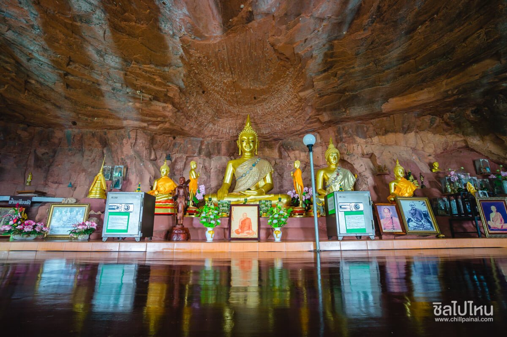

ถ้ำนาคา (อุทยานแห่งชาติภูลังกา)
จ.บึงกาฬ
เริ่มต้นกันที่ ถ้ำนาคา แหล่งท่องเที่ยวชื่อดังที่ได้รับความนิยมมาก ตั้งอยู่ในเขตพื้นที่อุทยานแห่งชาติภูลังกา มีพื้นที่ครอบคลุม 2 จังหวัดคือ จ.นครพนม และ จ.บึงกาฬ ไฮไลท์ของที่นี่จะอยู่ที่รูปทรงของหินที่มีรูปร่างเหมือนงูยักษ์หรือที่เรียกกันว่าเศียรพญานาค ผนังถ้ำมีลักษณะเป็นเกล็ดงูขนาดใหญ่ นอนขดตัวอยู่ปากถ้ำอยู่บนหน้าผาสูง อีกทั้งยังมีเจดีย์ของหลวงปู่เสาร์และเจดีย์หลวงปู่วังประดิษฐานอยู่บนเนินหินริมหน้าผาด้านบน ทำให้กลายเป็นเป็นแหล่งท่องเที่ยวสุดฮิตสำหรับคนที่ชอบธรรมชาติและความเชื่อทางพระพุทธศาสนาที่มีเรื่องเล่าเกี่ยวกับพญานาคที่ผูกโยงกับแม่น้ำโขงเข้ามาเกี่ยวข้องนั่นเองค่ะ สำหรับการเดินขึ้นถ้ำนาคานั้นจะใช้เวลาไปกลับประมาณ 4-5 ชั่วโมง (ขึ้นอยู่กับร่างกายของแต่ละบุคคล) ทางเดินจะเป็นดินสลับกับบันไดเหล็ก ในช่วงแรกเป็นการเดินลุยป่าเข้าไปมองทางไหนก็สีเขียวสบายตาไปหมด แต่บางจุดที่เป็นโขดหินและทางชันอาจจะต้องใช้เชือกไต่ขึ้นและลงนะคะ โดยจะมีเจ้าหน้าที่อุทยานฯ คอยดูแลอยู่ด้วย แต่รับรองมีความสวยงามตามธรรมชาติ จึงไม่แปลกใจเลยว่าทำไมที่นี่ถึงกลายเป็นสถานที่ unseen ของบึงกาฬที่ใครๆ ก็อยากมากันสักครั้งในชีวิต!
ถ้ำนาคา อุทยานแห่งชาติภูลังกา
ที่ตั้ง :ต.โพธิ์หมากแข้ง อ.บึงโขงหลง จ.บึงกาฬ
วันเวลาเปิด-ปิด :เปิดบริการตั้งแต่ 07.00 - 18.00 น.
GPS : https://goo.gl/maps/WS2N6G7RCjJ5D1b67

ถ้ำนาคี
จ.นครพนม
นับว่าเป็นสถานที่ศักดิ์สิทธิ์ที่ได้รับความนิยมไม่แพ้ถ้ำนาคาเลยก็ว่าได้ค่ะสำหรับ ถ้ำนาคี ตั้งอยู่ในเขตพื้นที่อุทยานแห่งชาติภูลังกา ฝั่งอำเภอบ้านแพง จังหวัดนครพนม ซึ่งตัวถ้ำจะมีลักษณะคล้ายๆ กับถ้ำนาคา แต่ไฮไลท์ของที่นี่คือมีเพิงหินใหญ่ที่มีลวดลายของเกล็ดพญานาคบนพื้นผิวของหินสวยงาม รายล้อมไปด้วยป่าไม้สีเขียวชอุ่ม อีกทั้งยังมีก้อนหินใหญ่ลักษณะเหมือนเศรียรพญานาคอยู่ไม่ไกลกันอีกด้วย ด้านในสุดของถ้ำจะมีพระพุทธรูปให้ชาวบ้านและนักท่องเที่ยวได้กราบไหว้ขอพรอีกทั้งยังเชื่อมโยงความเชื่อในเรื่องของพญานาคกับถ้ำนาคา สำหรับการเดินขึ้นถ้ำนาคีนั้นจะเป็นเส้นทางศึกษาธรรมชาติขึ้นไปยังน้ำตกตาดโพธิ์ ชั้นที่ 4 เดินผ่านน้ำตกผาสวรรค์และน้ำตกหินงาม ระยะทางทั้งหมดประมาณ 1.5 กิโลเมตร ใช้เวลาไปกลับประมาณ 2-3 ชั่วโมง (ขึ้นอยู่กับร่างกายของแต่ละบุคคล) อีกทั้งหากเดินทางต่อไปอีกราวครึ่งกิโลเมตรก็จะมีจุดชมวิวผานาคี ที่เป็นจุดชมวิวแม่น้ำโขงที่งดงามอีกด้วยค่ะ

ถ้ำนาคี
ที่ตั้ง : ต.ไผ่ล้อม อ.บ้านแพง จ.นครพนม
วันเวลาเปิด-ปิด :เปิดบริการตั้งแต่ 07.00 - 18.00 น.
GPS : https://goo.gl/maps/GagcvsuK815hcGBc8
วัดป่าเมืองเหือง (วัดศรีบุญเรือง)
จ.บึงกาฬ
หากเพื่อนๆ เชื่อในเรื่องของพญานาคแล้วล่ะก็..ต้องแวะมาสักการะสิ่งศักดิ์สิทธิ์พระพุทธนาคนิมิตต์หนึ่งเดียวในจังหวัดที่ วัดป่าเมืองเหือง หรือวัดศรีบุญเรือง เป็นวัดโบราณเล็กๆ อยู่ติดแม่น้ำโขงใน ต.ชัยพร อ.เมือง จ.บึงกาฬ โดยวันนี้ถูกสร้างขึ้นเมื่อครั้งขอมเรืองอำนาจสมัยพระเจ้าชัยวรมันที่ 8 ต่อมาราวปี พ.ศ. 2100 ได้รับการพระราชทานวิสุงคามสีมา บูรณะใหม่อีกครั้ง มีลานธรรม มีกุฏิหลังเล็กรองรับผู้มาปฏิธรรม สำหรับไฮไลท์จะอยู่ที่องค์พระพุทธนาคนิมิตต์ (หน้าทอง) พระพุทธรูปประจำวัดที่ประดิษฐานริมแม่น้ำโขงหันหน้าออกไปริมแม่น้ำโขงใครมากราบไหว้ขอพร มักสมหวัง สมปรารถนา และบางช่วงที่น้ำไม่เชี่ยวเราสามารถลงเรือไปนมัสการศาลปู่พญานาคศรีสุทโธและทัวร์แก่งสะดอก (ก้อนธาตุ) กลางแม่น้ำโขง ข้างล่างแก่งสะดอกจะมีถ้ำ ช่วงหน้าแล้งน้ำลด แก่งจะสวยงามมากสามารถเดินเที่ยวได้ด้วย นอกจากนี้ยังมีโบสถ์งดงามมีรูปปั้นพญานาครอบโบสถ์ หน้าโบสถ์จะมีปู่ศรีสุทโธ ย่าปทุมมาให้ญาติโยมได้กราบไหว้ขอพรอีกด้วยล่ะค่ะ นับว่าเป็นสถานที่อีกแห่งของจังหวัดบึงกาฬที่น่ามาสัมผัสความศักดิ์สิทธิ์ริมแม่น้ำโขงจริงๆ
วัดป่าเมืองเหือง
ที่ตั้ง : ต.ชัยพร อ.เมืองบึงกาฬ จ.บึงกาฬ
วันเวลาเปิด-ปิด :เปิดบริการตั้งแต่ 07.00 - 18.00 น.
GPS : https://goo.gl/maps/BSVjn4ySpRJoG33i7
ภูทอก (วัดเจติยาคีรีวิหาร)
จ.บึงกาฬ
มาถึงบึงกาฬ จังหวัดน้องใหม่แดนอีสานทั้งที เราจะพลาดภูทอก หรือวัดเจติยาคีรีวิหาร สถานที่ปฏิบัติธรรมของภิกษุ สามเณรและพุทธศาสนิกชนทั่วไป ไม่ได้จริงๆ โดยมีลักษณะเป็นเขา 2 ลูก ลูกเล็กและลูกใหญ่ เป็นศาสนสถานที่สร้างขึ้นด้วยแรงศรัทธามีวิวทิวทัศน์สวยงาม ซึ่งมีทางเดินเป็นบันไดไม้วนเวียนไปรอบๆ จนถึงชั้น 7 ด้านบนสุดของภูเขา บางช่วงจะมีทางลัดเลาะคดเคี้ยวไปตามโขดหิน แต่บางจังหวะจะเป็นบันไดไม้สูงชันขึ้นไปยังชั้นด้านบนที่สามารถชมวิวได้แบบเต็มสายตา 360 องศาเลยทีเดียว สำหรับไฮไลท์จะอยู่ที่ชั้น 5 มีศาลาขนาดใหญ่เป็นที่ประดิษฐานของพระพุทธรูปและเป็นที่เก็บสังขารของพระอาจารย์จวนด้วย ถ้าเดินมาทางด้านเหนือจะเห็นสะพานหินธรรมชาติทอดสู่พุทธวิหาร อันเป็นที่บรรจุพระบรมสารีริกธาตุ มีลักษณะแปลกและน่าอัศจรรย์คล้ายกับพระธาตุอินทร์แขวนที่พม่าคือเป็นหินแยกตัวออกมาจากหินก้อนใหญ่แต่ไม่ตกลงมา ส่วนชั้น 6 จะมีสิ่งศักดิ์สิทธิ์อย่างพระพุทธรูป อีกทั้งยังมีความเชื่อว่าเป็นปากทางเข้าเมืองพญานาค ซึ่งอยู่หลังพระปางนาคปรก จุดสังเกตคือรอยสีขาวขูดติดกับหินปูนที่ชาวบ้านเชื่อว่าเป็นรอยถลอกที่เกิดจาก ท้องพญานาคสัมผัสกับหินนั่นเอง ส่วนชั้นที่ 7 นั้นไม่มีอะไรมากค่ะ เป็นทางเดินในป่า ถ้าได้มาถึงด้านบนตามที่ตั้งใจไว้แล้ว ความรู้สึกจะเหมือนกับคนที่ได้หลุดพ้นจากอุปสรรคต่างๆ ด้วยความมุ่งมั่นอย่างไรอย่างนั้น
ภูทอก (วัดเจติยาคีรีวิหาร)
ที่ตั้ง :ต.นาแสง อ.ศรีวิไล จ.บึงกาฬ
วันเวลาเปิด-ปิด :เปิดบริการตั้งแต่ 06.30 - 17.00 น.
GPS : https://goo.gl/maps/8ULYMQnGy7KiskJU8
คำชะโนด (วังนาคินทร์คำชะโนด)
จ.อุดรธานี
ขยับมาที่จังหวัดอุดรธานีกับสถานที่ที่ได้รับความนิยมมากอย่าง คำชะโนด หรือวังนาคินทร์คำชะโนด ด้วยตำนานที่ผูกพันกับความเชื่อในเรื่องพญานาคและเรื่องราวเกี่ยวกับความลึกลับต่างๆ ที่เชื่อกันว่าเป็นดินแดนของพญานาคประตูเชื่อมสู่เมืองบาดาล ด้วยความขลังและความศักดิ์สิทธิ์เลื่องลือมายาวนานนี่เองจึงทำให้ใครต่อใครอยากเดินทางมาคำชะโนดกันสักครั้ง โดยบริเวณคำชะโนดนั้นจะคราคร่ำไปด้วยผู้คนมากมาย มีทุกเพศ ทุกวัย ตั้งแต่ลูกเด็กเล็กแดง ไปจนถึงคุณตา คุณยายถือไม่เท้ามาที่นี่ ซึ่งสิ่งที่ทุกคนปฏิบัติเหมือนกันคือการถอดรองเท้าเพื่อเดินเท้าเปล่าไปยังคำชะโนด โดยมีสะพานทางเดินพญานาคที่นำเราไปยังเกาะกลางน้ำ บรรยากาศสองข้างทางนั้นเต็มไปด้วยต้นชะโนดที่สูงชะลูดแทงเสียดไปบนท้องฟ้า อากาศข้างนอกที่เคยร้อน พอเดินเข้ามาในนี้กลับเย็นขึ้นทันใดเลยล่ะค่ะ เมื่อมาถึงแล้วก็อย่าลืมไปกราบสักการะพ่อปู่ศรีสุทโธขอพรเพื่อเป็นสิริมงคลด้วยนะ
คำชะโนด (วังนาคินทร์คำชะโนด)
ที่ตั้ง :64 ม.11 ต.บ้านม่วง อ.บ้านดุง จ.อุดรธานี
วันเวลาเปิด-ปิด :เปิดบริการตั้งแต่ 07.00 - 17.00 น.
GPS : https://goo.gl/maps/wytorYDcJUS2
วัดป่าภูก้อน
จ.อุดรธานี
อีกหนึ่งสถานที่ศักดิ์สิทธิ์ห้ามพลาดเมื่อไปอุดรธานีคือการเดินทางไปยัง วัดป่าภูก้อน วัดสวยท่ามกลางขุนเขา ตั้งอยู่ในอำเภอนายูง จังหวัดอุดรธานี ห่างจากตัวเมืองอุดรธานีไปประมาณ 120 กิโลเมตร ใช้เวลาเดินทางประมาณ 2 ชั่วโมง ซึ่งไฮไลท์ของที่นี่คือพระวิหารพระพุทธไสยาสน์ พระวิหารหลังคาสีฟ้าที่ตั้งอยู่บนเขา ภายในพระวิหารประดิษฐานพระพุทธไสยาสน์โลกนาถศาสดามหามุนี พระนอนที่ทำจากหินอ่อนสีขาวยาว 20 เมตร ออกแบบและแกะสลักองค์พระพุทธไสยาสน์โดยอาจารย์นริศ รัตนวิมล ในส่วนฐานพระพุทธรูปซึ่งเป็นภาพปั้นนูนต่ำหล่อทองแดงเรื่องราวของพระมหาปรินิพพานสูตร ออกแบบโดยอาจารย์สมยศ คำแสง ทำให้ที่นี่นอกจากจะเป็นศาสนสถานสำหรับปฏิบัติวิปัสนาของพระภิกษุสงฆ์แล้ว ยังเป็นสถานที่ที่เต็มไปด้วยพุทธศิลป์ที่สวยงามและทรงคุณค่าเหมาะกับการมาเยี่ยมชมให้ได้สักครั้ง

วัดป่าภูก้อน
ที่ตั้ง :99 ม.6 ต.บ้านก้อง อ.นายูง จ.อุดรธานี
วันเวลาเปิด-ปิด :เปิดบริการตั้งแต่ 08.30 - 17.00 น.
GPS : https://goo.gl/maps/tQ52czpswNw
พญาศรีสัตตนาคราช
จ.นครพนม
มาต่อที่แลนด์มาร์คยอดฮิตนครพนมอย่าง พญาศรีสัตตนาคราช องค์พญานาคทองเหลืองที่แสนงดงามและมีขนาดใหญ่ที่สุดในภาคอีสาน มี 7 เศียร ลำตัวเดียว ถือได้ว่าเป็นตระกูลพญานาคที่สืบสายพันธุ์มาแต่ครั้งพุทธกาล มีความใกล้ชิดพระพุทธองค์และพระพุทธศาสนา จนอาจถือว่าเป็นต้นตระกูลแห่งพญานาคทั้งหลายทั้งปวง โดยประดิษฐานบนแท่นฐานแปดเหลี่ยม ความสูงทั้งหมดรวมฐาน 15 เมตร สามารถพ่นน้ำได้อยู่ที่ริมฝั่งแม่น้ำโขงในฐานะที่เป็นผู้ดูแลปักปักษ์รักษาแถบลุ่มน้ำโขง รักษาพุทธศาสนา รวมถึงองค์พระธาตุพนม ซึ่งผู้คนมักจะแวะเวียนมากราบไหว้ขอพรกันอย่างเหนียวแน่น อีกทั้งยังร่ำลือกันว่าหากใครมาขอพรหรือบนบานองค์พญาศรีสัตตนาคราช อาจสัมฤทธิ์ผลเพราะเชื่อว่ามีความศักดิ์สิทธิ์ ทำให้บรรยากาศค่อนข้างคึกคักสุดๆ

พญาศรีสัตตนาคราช
ที่ตั้ง :ต.ในเมือง อ.เมืองนครพนม จ.นครพนม
GPS : https://goo.gl/maps/jDxBsJPbjLpN2cLd9
วัดพระธาตุพนมวรมาหาวิหาร
จ.นครพนม
สถานที่ศักดิ์สิทธิ์สำคัญของนครพนมอีกหนึ่งแห่งอย่าง วัดพระธาตุพนมวรมาหาวิหาร ก็นับว่าเป็นอีกโลเคชันที่ควรเดินทางมาสักการะพระธาตุพนม ศาสนสถานอันศักดิ์สิทธิ์แห่งแดนอีสานเป็นสถานที่ประดิษฐานองค์พระธาตุพนม ซึ่งเป็นเจดีย์บรรจุพระอุรังคธาตุหรือกระดูกส่วนหัวอกของสมเด็จพระสัมมาสัมพุทธเจ้า อีกทั้งยังเป็นพระธาตุประจำของเกิดปีวอกและคนเกิดวันอาทิตย์ โดยผู้คนส่วนใหญ่มักมาขอพรให้พระธาตุประจำวันคุ้มครอง แต่ถ้าเราไม่ได้เกิดตรงตามวันของพระธาตุก็สามารถเดินทางมากราบไหว้เพื่อเสริมสิริมงคลแก่ชีวิต รวมถึงชมความสง่างามขององค์พระธาตุได้นะคะ บอกเลยว่าถ้ามานครพนมแล้วไม่มาที่วัดนี้ถือว่าพลาดมาก
วัดพระธาตุพนมวรมาหาวิหาร
ที่ตั้ง :183 13 ถ.ชยางกูร ต.ธาตุพนม อ.ธาตุพนม จ.นครพนม
วันเวลาเปิด-ปิด :เปิดทุกวัน ตั้งแต่ 06.00 - 20.00 น.
GPS : https://goo.gl/maps/PaN1nhVKWCg9ggvs7
วัดพระพุทธบาทภูควายเงิน
จ.เลย
มาต่อที่สถานที่ศักดิ์สิทธิ์คู่บ้านคู่เมืองเชียงคานที่ทุกคนห้ามพลาดเลยก็คือ วัดพระพุทธบาทภูควายเงิน ตั้งอยู่บนเขาสูงชันแต่สามารถขับรถยนต์ไปวัดได้สะดวก ซึ่งในวัดแห่งนี้มีรอยพระพุทธบาทประดิษฐานอยู่บนหินลับพร้าหรือที่เราคุ้นชินเรียกกันว่าหินลับมีด มีลักษณะเป็นรอยแตกไม่มีอักษรจารึกแต่รูปลักษณะเหมือนรอยพระพุทธบาทจริงโดยได้รับการขึ้นทะเบียนเป็นโบราณสถานแล้ว นอกจากนี้ภายในวัดยังมีพระเจ้าใหญ่พุทธฉัพรรณรังสี พระพุทธรูปปั้นสีขาวองค์ใหญ่ที่ประดับด้วยกระจกเงาชิ้นเล็กๆ ให้นักท่องเที่ยวได้สักการะและชมความสวยงามไปพร้อมๆ กัน ที่สำคัญยังมีรูปปั้นควายเงินให้เราอธิษฐานขอสิ่งดีๆ ให้สำเร็จสมประสงค์ตามคำขอด้วยนะ
วัดพระพุทธบาทภูควายเงิน
ที่ตั้ง :ต.บุฮม อ.เชียงคาน จ.เลย
วันเวลาเปิด-ปิด :เปิดทุกวัน 06.00-18.00 น.
GPS : https://goo.gl/maps/kCh5fNSMqxYmsrWD9
พระธาตุศรีสองรัก
จ.เลย
มาถึงที่สุดท้าย พระธาตุศรีสองรัก สถานที่ศักดิ์สิทธิ์คู่บ้านคู่เมืองรวมถึงเป็นสิ่งยึดเหนี่ยวจิตใจของชาวจังหวัดเลยก็ว่าได้ เพราะมีอายุยาวนานกว่า 400 ปี โดยสร้างจากสัตยาธิษฐานระหว่างสมเด็จพระมหาจักรพรรดิแห่งกรุงศรีอยุธยาและพระเจ้าไชยเชษฐาธิราชแห่งกรุงศรีสัตนาคนหุต (อาณาจักรล้านช้าง) ว่าจะไม่ล่วงล้ำดินแดนของกันและกัน จึงเป็นจุดเริ่มต้นของเจดีย์ศรีมหาธาตุก่อสร้างด้วยศิลปกรรมแบบล้านช้างส่วนเจดีย์สร้างแบบก่ออิฐถือปูน ภายในมีพระพุทธรูปปางนาคปรก (ศิลปะทิเบต) องค์พระพุทธรูปสร้างด้วยทองสัมฤทธิ์ ที่สำคัญทุกวันขึ้น 15 ค่ำ เดือน 6 จะมีการจัดงานสมโภชพระธาตุขึ้น โดยชาวบ้านจะนำต้นผึ้งมาถวายพระธาตุถือว่าเป็นประเพณีอันศักดิ์สิทธิ์ที่เกิดขึ้นประจำทุกปี แต่ถ้าเราไปเที่ยวจังหวัดเลยช่วงที่ไม่ใช่งานสมโภชก็สามารถแวะเข้าไปสักการะพระธาตุเพื่อความเป็นสิริมงคลในชีวิตได้ทุกวันเลยนะ
พระธาตุศรีสองรัก
ที่ตั้ง :ต.ด่านซ้าย อ.ด่านซ้าย จ.เลย
วันเวลาเปิด-ปิด :เปิดทุกวัน 06.00-18.30 น.
GPS : https://goo.gl/maps/pQ6nnNVqJ9HVeexD7